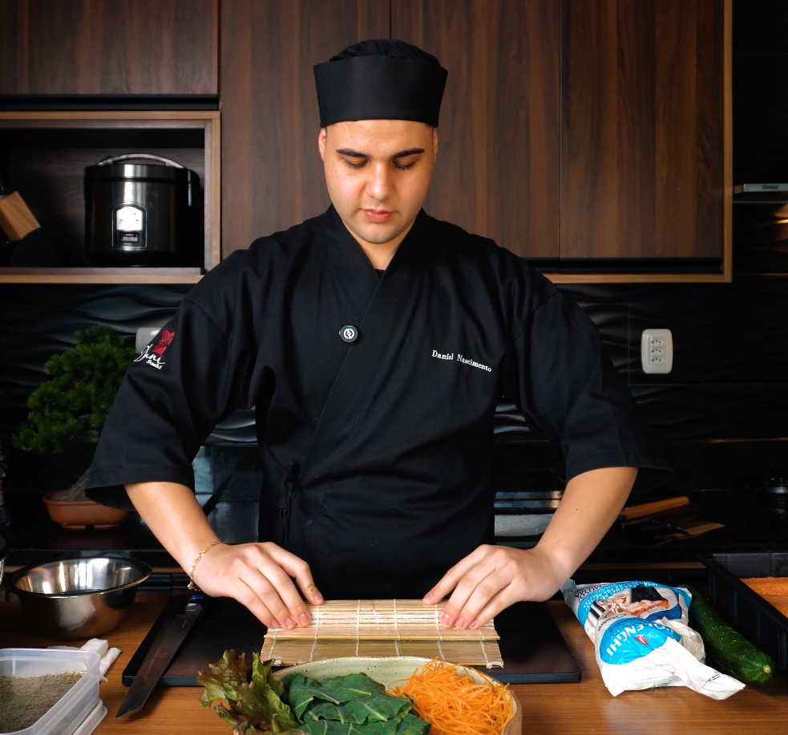

Quer ter certeza? Nosso Instagram mostra a solidez e credibilidade do nosso trabalho.
📸 Instagram
Este curso foi desenvolvido especialmente para iniciantes sem experiência ou contato com a cozinha japonesa, que desejam aprender de forma prática, divertida, acessível e sem gastar fortunas com delivery.
São 13 videoaulas práticas e fáceis de seguir, criadas para quem sempre teve vontade de experimentar, mas achava que fazer sushi em casa era complicado demais.
Aqui, você vai aprender tudo passo a passo: desde os ingredientes, utensílios básicos e até a montagem dos sushis mais famosos como: nigiri, uramaki, temaki e muito mais.
| Recursos | Curso 13 Passos | YouTube |
|---|---|---|
| Sequência fácil de seguir | ✔ | ✘ |
| Aulas em FHD | ✔ | ✘ |
| Explicação simples para iniciantes | ✔ | ✘ |
| Resultados imediatos | ✔ | ✘ |
| Economia real com delivery | ✔ | ✘ |
| Materiais complementares | ✔ | ✘ |
| Certificado de conclusão | ✔ | ✘ |
| Nosso contato (para dúvidas) | ✔ | ✘ |
Nunca tinha feito sushi, agora faço hot toda semana!
Economizei mais de R$ 300 no primeiro mês.
O ebook e o menu com fotos são perfeitos.
Se você não gostar do curso, devolvemos 100% do seu dinheiro. Sem perguntas.